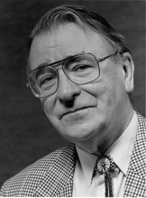

Please note: the AAS Obituaries are temporarily being hosted on this website while their full content is being ingested into the PubPub publishing platform newly adopted by the Bulletin of the American Astronomical Society. When the migration is complete, your existing links will take you to the final, migrated content. Contact peter.williams@aas.org with any questions.
Cornelis Zwaan (1928-1999)
Comelis ("Kees") Zwaan was a well-known solar physicist at Utrecht University in The Netherlands. Together with his graduate students he also ventured out to other cool stars, concentrating on their magnetic activity. He was a member of the AAS and the Solar Physics Division and had close ties with many American astrophysicists. He died from cancer in his house at Doorn, The Netherlands on June 16, 1999. He had had major surgery in 1998, but recovered so fast that we and his other friends expected to have him with us much longer. The end came far too soon. Kees' research focused initially on sunspots and NLTE spectroscopy, but quickly expanded to the MHD theory of flux tubes, and to stars in 1977 when he initiated studies of solar and stellar magnetic activity utilizing solar-stellar complementarity.
His own careful work and the large amount of research which he guided and inspired have greatly advanced our understanding of the sun and other cool stars. He was directly involved in the development of the flux tube paradigm, stimulated boundary-layer dynamo theory, pioneered in diagnosing sunspot patterns, and led a sequence of coworkers in studies of stellar activity. His PhD students who continued careers in astronomy include ourselves, Henk Spruit, Albert Greve, Aad van Ballegooijen, René Rutten, Karen Harvey, Louis Strous, and Ken Tapping; in addition, he was PhD co-advisor to Jan van Paradijs, Han Uitenbroek, Jo Bruls, Nick Hoekzema and others. The production of this "school," the largest astronomical one to come out of Utrecht, was what he was most proud of.
He also inspired many colleagues, both in The Netherlands and abroad, in a wide range of topics including Stokes profile modeling, the theory of molecular Zeeman splitting, stellar polarimetry, binary merging through magnetic braking, cluster evolution, and many other endeavours.
He once remarked that he should score higher in acknowledgements than in citations — being much surprised when we showed him earlier this year that his citation record ranks in the top solar physics bracket. That fact reflects the wide range of his research interests and accomplishments. He was also instrumental in founding the Solar Physics Section of the European Physical Society (subsequently also of the European Astronomical Society) and chaired the Utrecht astronomy department and the Dutch astronomical society ("Nederlandse Astronomenclub"). Kees lived most of his life in the quiet residential village of Doorn where he was born as elder son into a civil service family where intellectual activities were highly regarded, and where he displayed his didactic inclination quite early by being a rather demanding teacher of bird and plant life to his younger brother Joost. He studied physics and astronomy at Utrecht University during 1946-1954 and then became a high school physics teacher for five years, interrupted by two years of mandatory military service (which he fulfilled as Russian language interpreter). He often remarked that high-school teaching makes for good habits, for example acquiring legible handwriting.
Afterwards, as university professor, he spent much effort on introducing astrophysics into the Dutch high school curriculum. Kees started a PhD thesis on sunspot spectroscopy while being a teacher, but then obtained a grant from the Dutch national science foundation (ZWO) and after that a temporary position at Sterrewacht Sonnenborgh (now Sterrekundig Instituut Utrecht) to complete it. He defended his thesis "Sunspot Models — A Study of Sunspot Spectra" in 1965, with M.G.J. Minnaert as supervisor. It made him an authority on sunspots and the treatment of scattered light. After the thesis, the Zwaans (Kees married Prisca van Diggelen in 1954) spent 1966-1967 at the Sacramento Peak Observatory, at the time when Jack Evans turned that Air Force facility into the premier solar physics institution in the world. It gave Kees opportunity to study active region morphology on the large film collection at the Big Dome (now the Evans Facility), making him an expert on the structural and evolutionary patterns of solar magnetism. The stay was a rich experience that made Kees and Prisca lovers of Southwest scenery and Indian culture, and turned Kees into a life-long bolo-tie wearer much to the dismay of his Dutch relatives unfamiliar with the ornament. Also, the American frankness suited Kees and Prisca well — many of their American colleagues became friends and have enjoyed their hospitality at Doorn. Kees became university lecturer (associate professor) upon his return to Utrecht in 1968, full professor in 1980. The early seventies saw large involvement in JOSO, an assembly of European solar physicists setting out to find the best site for optical solar observing in Europe and eventually selecting sites on Tenerife and La Palma. At Utrecht, Kees inspired engineer Rob Hammerschlag to start on his open tower and telescope, a long development that finally bears fruit now as the "Dutch Open Telescope" on La Palma. Its concept, which relies on wind flushing rather then vacuum, turns out highly successful, and now inspires designs for future solar telescopes. Kees and Prisca were present at the First Light Ceremony; Kees' last activity was to set up and endow a fund to support its operation.
During his last winter, Kees completed a major project: co-authoring Solar and Stellar Magnetic Activity , which appears this winter. Most parts written by Kees convey his uncanny ability to recognize basic physical principles in varied, incomplete and highly confusing data. His awe for the inspiring questions posed by stellar magnetism lives on in these pages.
Photo courtesy of Rob Rutten.
Obituary written by: Rob Rutten (Sterrekundig Institut Utrecht)
BAAS Citation: BAAS, 1999, 31, 1612
SAO/NASA ADS Bibcode: 1999BAAS...31.1612R